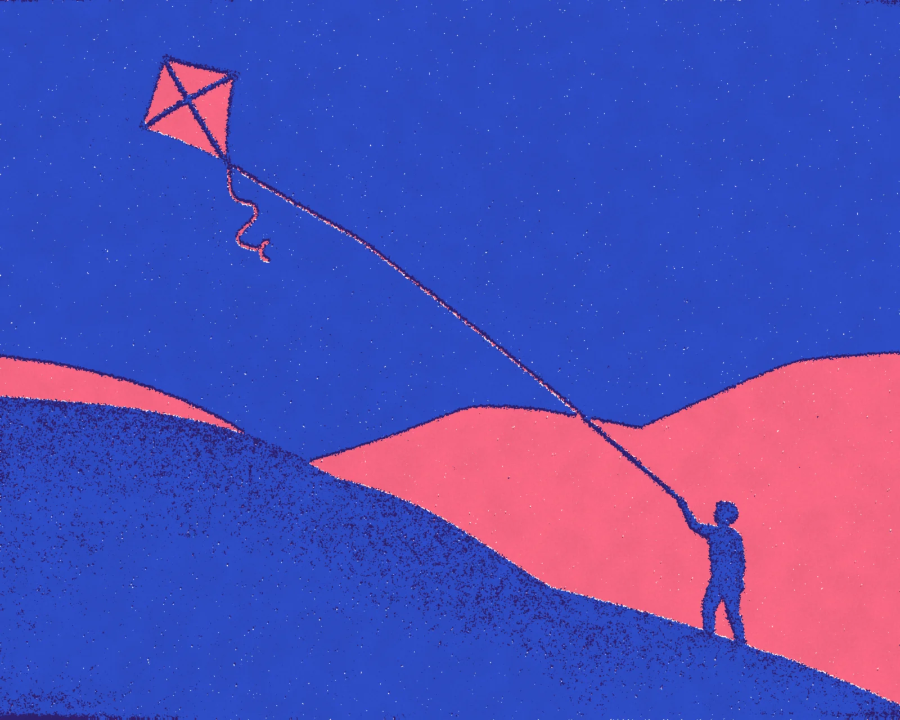
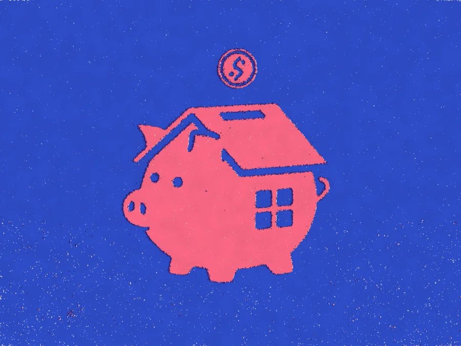
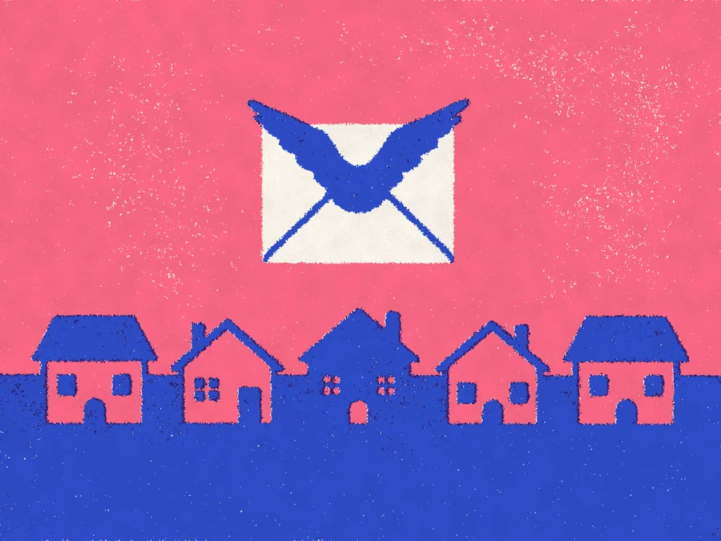
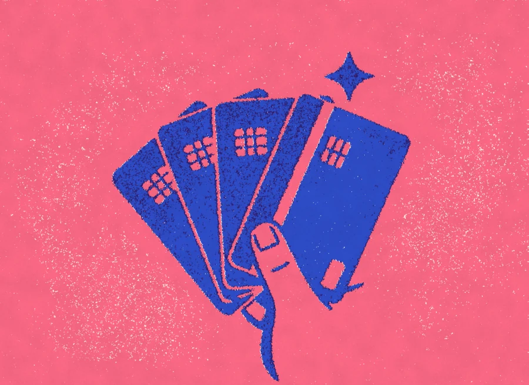

Cash flow, with the wind behind it.
Kitewell is the business account that sees the month ahead. Invoices, payroll and tax, laid out before they land.
Every payment you know about, on one line.
Connect your invoices and payroll once. Kitewell draws the next ninety days of money in and money out, and tells you a week early when a dip is coming.

See the dip before it happens.
When a quiet month is on its way, Kitewell shows you which invoices to chase and which payments can wait, so the balance never surprises you.
- Ninety-day view
- Dip alerts
- What-if payments
Invoices that chase themselves.
Send an invoice from the forecast and Kitewell follows it up on the day it falls due, politely, then less politely, until the money lands.
- Reminders on a schedule
- Pay-by-link
- Part payments
The account that does the sums.

Tax set aside
A share of every payment in goes to a VAT and corporation tax pot the moment it lands.

Pay day on time
Run payroll from the account that holds the money, with the forecast showing what is left after.

A card for everyone
Virtual and physical cards with limits per person, per supplier and per month.
Keeping the books for teams at
- Pellmoor Bakes
- Fernhill & Co
- Oxbow Studio
- Tallis Joinery
- Brightwater Cycles
The forecast told us in March what April would look like.Ama Boateng, founder of a fictional bakery chain